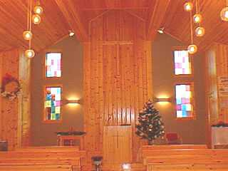
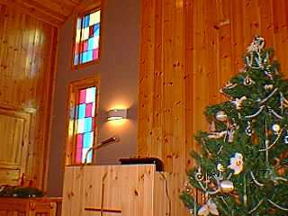
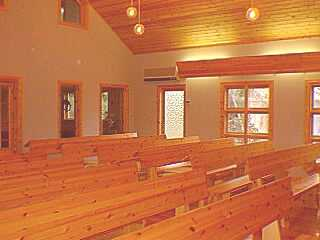

礼拝堂の写真

| 礼拝堂の後ろ正面から撮った写真です。クリスマスなので ツリーがあります。 |

| 向かって右側の壁際に立って撮った写真。右手に見えるのが私が弾いているピアノです。 |

| 降壇近くをアップで撮ってみました。 |

| ピアノのそばあたりから後ろに向かって撮った写真。 |
写真の一覧に戻る

| 礼拝堂の後ろ正面から撮った写真です。クリスマスなので ツリーがあります。 |
| 向かって右側の壁際に立って撮った写真。右手に見えるのが私が弾いているピアノです。 |

| 降壇近くをアップで撮ってみました。 |

| ピアノのそばあたりから後ろに向かって撮った写真。 |